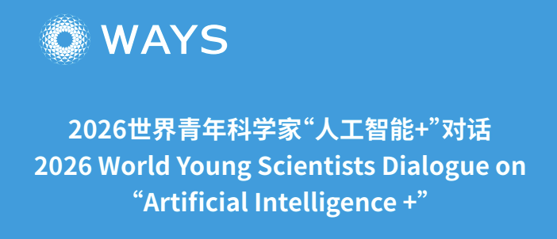
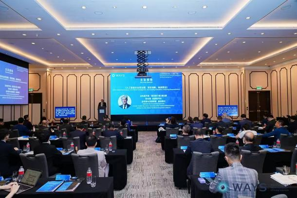
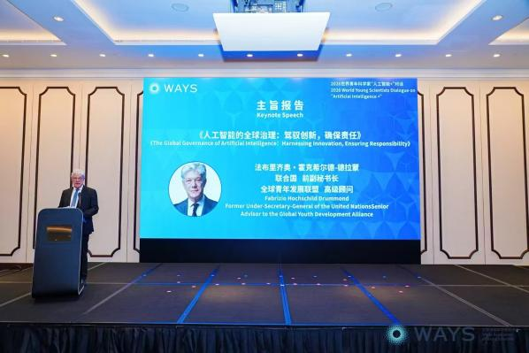
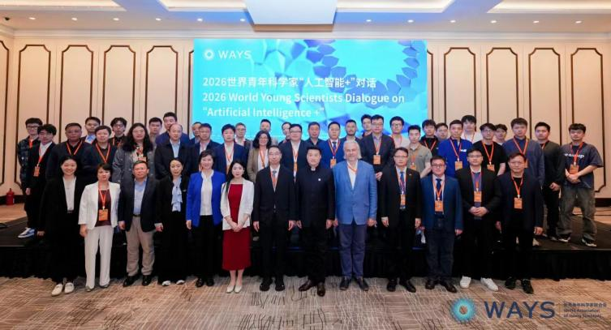

Former UN Under-Secretary-General Fabrizio Hochschild Calls for Global Collaboration in AI Governance at GYDA Macau Dialogue

Location
Macau
Date
March 28-29, 2026
The 2026 World Young Scientists "AI+" Dialogue opened in Macau, jointly hosted by the Global Youth Development Alliance (GYDA), China Science and Technology Development Foundation, and Macau Science and Technology Development Fund.
The event featured a powerful keynote address from Dr. Fabrizio Hochschild, former United Nations Under-Secretary-General and Senior Advisor to GYDA. Addressing over 120 young scientists, policymakers, and industry leaders from around the world, Hochschild delivered profound insights on the urgent need for global governance of artificial intelligence.
The dialogue was organized by Zhongguancun Industry Technology Alliance Federation, Macau Digital Health and Artificial Intelligence Society, and Macau Young Scientists Association, with support from the Economic and Technological Development Bureau of the Macau SAR Government, Macau Association for the Advancement of Science and Technology, and Hengqin Guangdong-Macao In-Depth Cooperation Zone Economic Development Bureau.
GYDA's High-Level Advisory Position Reinforced

In his speech, Hochschild emphasized the critical value of GYDA as an international platform for young scientists. "At a time when global cooperation is at a low ebb, platforms like GYDA that bring together young scientists across borders and sectors are essential for advancing collaborative approaches to AI governance," he stated.
The participation of a former UN Under-Secretary-General as GYDA Senior Advisor underscores the organization's growing influence and credibility in international technology governance circles.
AI: The New Electricity Requiring Wise Governance

Hochschild described artificial intelligence as "the new electricity" — no longer an emerging technology but a cornerstone of the new economy and the driving force transforming our social interactions, governance, politics, environment, and planetary health.
Latest global projections suggest AI could lift global GDP by 8-12% over the next decade — adding one percentage point to annual growth, a leap comparable to industrialization in the 19th century.
However, technological advancement brings unprecedented risks. Hochschild identified three major risk clusters:
- Concentration of Power and Inequality: AI is reshaping power distribution within and between nations, potentially exacerbating wealth gaps.
- Malicious Use: From deepfakes to autonomous weapons, AI misuse threatens social security.
- Systemic Risks: Including employment disruption, environmental burden, and erosion of human autonomy.
China's Initiative: A Positive Force in Global AI Governance
Hochschild specifically recognized China's constructive role in global AI governance. He cited President Xi Jinping's Global Initiative on AI Governance, which emphasizes that humanity should "jointly seize the opportunities of AI while managing its risks in a fair, just, and inclusive manner."
China's "AI Capacity-Building Action Plan for Good and for All" is helping developing countries enhance technical expertise, laying the foundation for an inclusive digital future. Initiatives like the Digital Silk Road demonstrate China's commitment to sharing AI benefits with resource-limited nations.
The Mission and Responsibility of Young Scientists

Concluding his address, Hochschild issued a call to action: "All stakeholders — governments, academia, the private sector, civil society — must unite to transform fragmented progress into comprehensive global governance with accountability, ensuring AI becomes a consistent force for good for all."
The "AI+" Dialogue represents GYDA's flagship international science and technology exchange event for 2026, creating a high-level platform for dialogue between young scientists and global governance experts to promote responsible AI innovation and application.